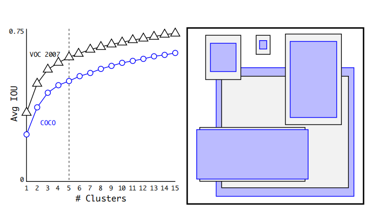

Yolo：You Only Look Once
经典的one-stage检测算法
Yolo v1
Introduction
- 创新之处：将目标检测分解为检测框的回归问题+物体分类问题，提出了一个one-stage的算法，能够做到实时检测。
- 结果：在07+12+数据集上训练模型，VOC2007测试集上达到63.4mAP。
- 优点：候选框少，因此几乎不会把背景当作检测框；可以end-to-end训练模型；泛化性能好，可以在油画，电影截图中检测物体；能给做到实时检测。
- 缺点：由于产生的候选框少，对小物体的检测度较低。由于候选框少，因此召回率低。
Method
Yolo v1的输入是一张resize到448*448的图片；将图片划分成7*7=49个正方形网格，每个网格会预测2个候选框，因此整个模型只有2*7*7=98个候选框；每个网格有30个参数，分别为2*5个定位信息与20个类别信息；每个定位信息包括\([x,y,w,h,p]\)参数，\(x,y\)都是\([0,1]\)范围的参数，代表检测框中心点距离网格左上角的偏移量，\(w,h\)也是\([0,1]\)范围的参数，代表检测框相对原图片的宽和高，\(p\)代表这个检测框有物体的概率；另外的20个类别信息代表框内物体落入各类的置信度分数。因此最终的预测值为一个7*7*30的向量。
Yolo v1的损失函数设计比较复杂，下面具体解释这个损失的含义。\(\mathbb{1}^{obj}_i=1\)当且仅当训练集检测框的中心落入了这个网格；\(\mathbb{1}^{obj}_{ij}=1\)当且仅当训练集检测框的中心落入了这个网格且\(B_j\)是与ground truth交并比较大的那个框，而\(\mathbb{1}^{noobj}_{ij}=1\)对应的是剩下的所有框。loss的第一行是对检测框中心坐标的偏移量计算损失，第二行是对检测框的尺寸计算损失，取根号是为了平衡小框与大框，所以网络实际输出的是\(w,h\)的平方根；第三行，第四行是对框内有物体的置信度计算损失，置信度=有物体的概率 * 与ground truth的IOU；第五行是对框内物体的分类计算损失。 在训练时，作者先将backbone网络放到ImageNet上面预训练，再在backbone的后面接了4个随机初始化的新网络层；作者做了许多数据增强的工作，包括随机缩放，色彩抖动；网络最后一层的激活函数是linear的，因为每个格子的30个参数的范围其实都是\([0,1]\)；最后对结果做NMS处理，其实NMS对Yolo v1的影响并不大，因为它本身产生的框少，不像SSD动辄8000个锚框。Yolo v2 & v3
Introduction
Yolo v2的几大改进：
- Batch Normalization：BN技术可以使训练变得容易，降低过拟合风险。Yolo v2加入BN层，去掉了dropout，mAP提升了2.4%。
- High Resolution Classifier：Yolo v1的策略是先将backbone放在ImageNet上预训练，再迁移到检测模型中。但是实际上，检测模型的输入图片尺寸（448*448）要大于ImageNet的输入224*224，因此Yolo v2增加了在ImageNet上finetune高分辨率图像这一过程，最终提升了4%的mAP。
- Convolutional With Anchor Boxes：Yolo v1只有7*7*2=98个候选框，并且每个格子的候选框共用一个分类器。Yolo v2加入了锚框，每个格子产生多个候选框，并且每个候选框独有一个分类器。大物体的中心一般在图片中心。为了更好的提升对大物体的检测能力，Yolo v2将输入尺寸改为416*416，缩小倍数为32，这样能够确保最终输出的feature map尺寸为奇数（13*13）。引入锚框，显著提升了召回率。
-
Dimension Clusters：既然引入了锚框，就需要指定初始尺寸。在SSD中，锚框尺寸是人工设置的，Yolo v2则对所有ground truth框做聚类分析，定义距离为IOU。为了平衡计算复杂度与精确度，Yolo v2最终选定了5个锚框。这种用聚类得到的锚框相比人工凭感觉设置的，在边界框回归时更容易。因此Yolo v2最终一共有13*13*5=845个锚框。

- New Network：使用Darknet-19代替VGG-16做backbone。Darknet-19相比VGG，精度差不多但参数量更少。
-
Direct location prediction：这一点延续Yolo v1，依然计算边界框中心相对于格子左上角的偏移量。Yolo v1由于最后一层使用linear的激活函数，有一个问题就是说如果网络产生负数或是大于1的数，就需要将其clamp到[0,1]区间。Yolo v2对最终的结果取了sigmoid，回避了上述情况。这种定位方式使得网络训练更稳定，结合聚类分析与锚框，总共提供了5%的mAP。

- Fine-Grained Features：网络最后一层的输出为\([13,13,1024]\)，倒数第二层为\([26,26,512]\)，Yolo v2先将倒数第二层处理为\([13,13,2048]\)的尺寸，再将其与最后一层拼接，得到最终的特征图。这一步可以使网络检测到更精细的物体。这个技巧可以使mAP提升1%。
- Multi-Scale Training：为了适应VOC数据集上输入图片的不同尺寸，在训练时，每隔10个batch，输入Yolo v2的图片大小就被重新resize一次。最终测试时，使用固定的输入尺寸。
Method
损失函数的设定与Yolo v1的思路相同，都是做加权MSE，不过Yolo v2更加复杂。锚框匹配的原则也是遵循第一代的策略，在训练中动态匹配，IOU最大的锚框与ground truth计算定位误差。